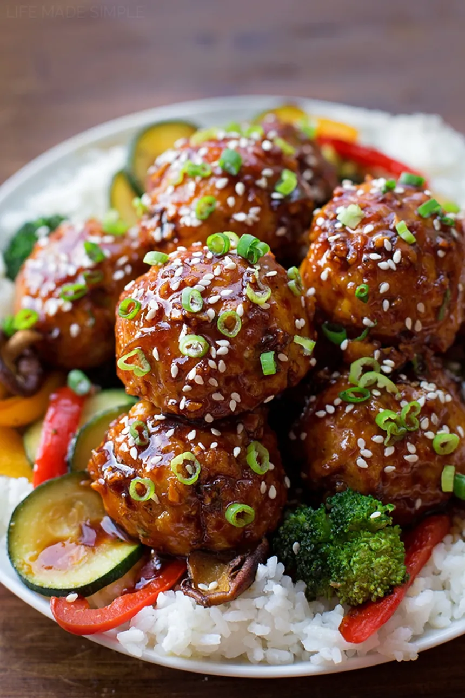

Homepage
Asian Meatballs

Vietnamese Meatballs with Rice and Soja Sauce
This Recipe is a nice and easy 30 minutte Dish with a Vietnamese flavor
Ingredients
- Rice 200g
- Minced Meat 200g
- Soy Sauce 60g
- Sugar 20g
- starch 6g
- Ginger 3g
- Garlic clove
Steps
- Wash and Cook the Rice in approx. double the Water
- Put the minced meat in a bowl add the Ginger, Garlic and 2 Tblsp. of Soy Sauce
- Mix the seasoned meat well and form into meatballs
- Fry the meatballs until they are brown all around
- Add soy Sauce and thicken it with the Starch and Sugar